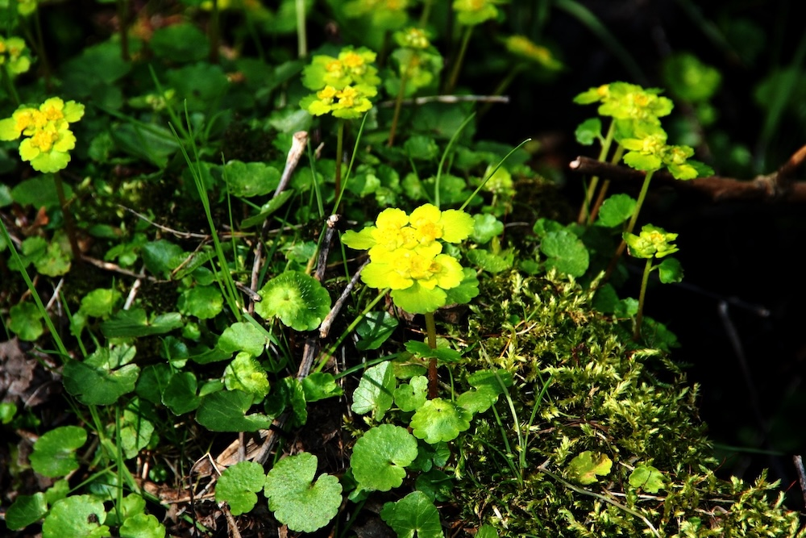

Frühlings-Goldlicht im Bachtal — der erste Wald-Frühblüher, den nur wenige kennen.


Goldlicht statt Blütenblätter
Das Milzkraut hat etwas Ungewöhnliches: Es gibt KEINE Blütenblätter. Die leuchtend gelben „Blüten“ bestehen nur aus den vier Kelchblättern und den umgebenden hellgelben Hochblättern, die sich wie eine Schale um die Blüte legen. Diese gelb-grüne Färbung der gesamten Blütenregion lockt frühe Insekten an und reflektiert Wärme — eine kluge Strategie für eine Pflanze, die schon im März blüht.
Wo Bäche fließen
Das Milzkraut ist ein klassischer Quell- und Bachuferbewohner. Es braucht ständig feuchten, kalkhaltigen Boden und milden Halbschatten. Wo es in dichten Beständen wächst, hat man eine intakte Quellgemeinschaft vor sich — ein wertvoller Lebensraum. Bei Trockenheit verschwindet es sofort.
Wissenswertes & Merksätze
Erkennen leicht gemacht
Niedrige (5–15 cm), polsterbildende Pflanze. Blätter klein, rundlich-nierenförmig, wechselständig. „Blüten“ in lockeren Schirmen — gelblich-grün, ohne richtige Blütenblätter, umgeben von hellgelben Hochblättern.
Verwechslung mit Gegenblättrigem Milzkraut
Die ähnliche C. oppositifolium hat gegenständige Blätter (wie der Name sagt). Die häufigere C. alternifolium hat wechselständige Blätter — daher der Name. Beide gemeinsam an Bachläufen, oft direkt nebeneinander.